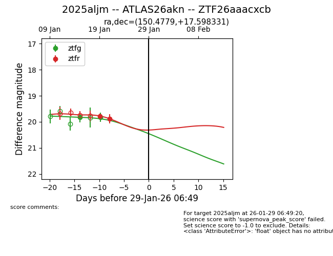
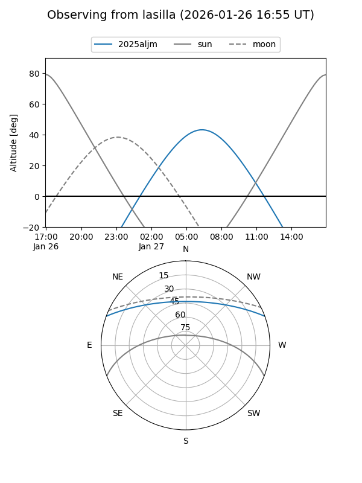
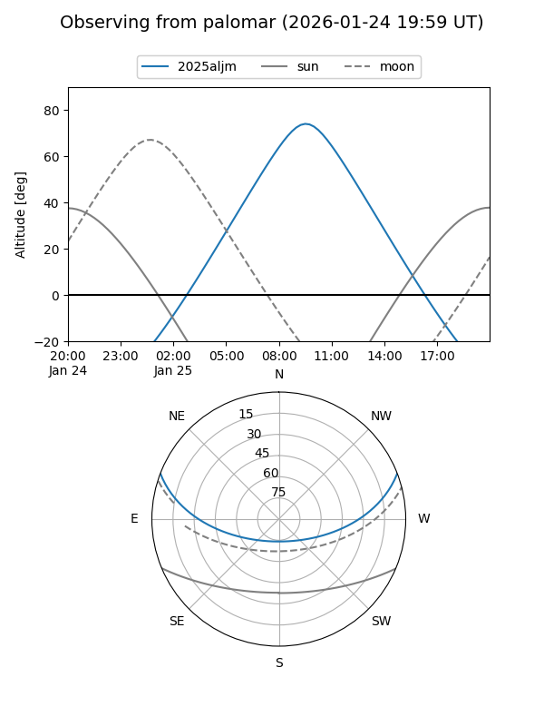
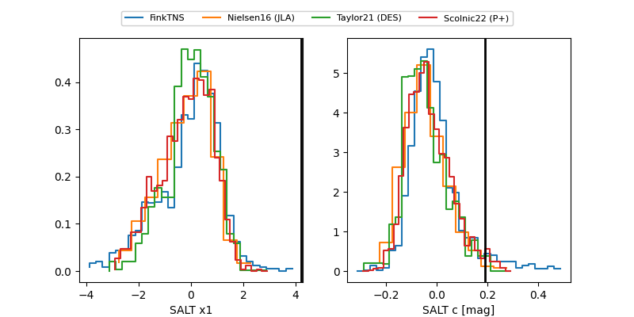

2025aljm
Target 2025aljm at 2026-01-23 12:36
Aliases and brokers:
FINK: link
Lasair: link
ALeRCE: link
TNS: link
YSE: link
alt names
ZTF26aaacxcb (ztf,fink_ztf)
2025aljm (tns,yse)
ATLAS26akn (atlas)
Coordinates:
equatorial (ra, dec) = 150.4779,+17.59833
equatorial (HMS+DMS) = 10:01:54.69,+17:35:53.99
galactic (l, b) = (217.5569,+49.86300)
Flags:
Photometry:
last ztfg=19.82, ztfr=19.89
2 ztfg, 2 ztfr detections
Lightcurve

Visibility


Additional plots
